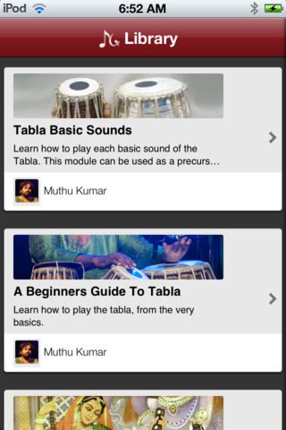
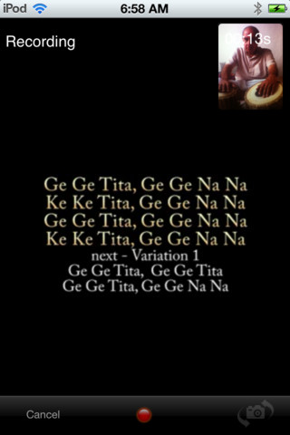

“If I were not a physicist, I would probably be a musician. I often think in music. I live my daydreams in music. I see my life in terms of music.” ― Albert Einstein
Few thing in the world connect us like music does. Mainstream music today has international appeal, and popular artists are known all around the world. There’s a singing contest on every third channel on the TV. But while music holds a special place in all our hearts, today’s insane schedules and maddening commutes leave us with little time for music. It’s often relegated to the RJs while we drive or our iPods while we’re huffing away on the treadmill. 9 out of 10 people will tell you that they’d love to learn how to sing better or to play a new instrument. However, few of them have the time to learn to sing or play an instrument due to time commitment involved.
So as a few of us pondered this, here’s what crossed our minds
“Lets make music learning fun!”
“How about something that lets you learn on your own, anytime, any place, at your own pace?”
From that “Aha!” moment, we set out to do precisely that. This is the story of how Musiguru was built.
Inception
When we started Levitum, Aditya and I shared a passion for travel and music. We had an initial concept for a music app, and it evolved through apps we built with local bands. One early milestone was when we won the 2nd prize in the Bangalore App Jam contest in a field of over 40 competing companies. If nothing else, this provided validation that the idea had appeal. Soon after, Intel & Nokia (the App Jam sponsors) invited us to build a marquee app on their new MeeGoo platform with NRE funding. Intel brokered early stage discussions to set up a network of content partners via Hungama and Time-Warner. However, Intel and Nokia fell out at this stage when Nokia partnered with Microsoft instead, and Intel was left without a software partner. And we were back nearly at square one. We didn’t know it then, but we were fortunate.
Definition
It was Raj who joined us mid last year who really drove the definition to the next level through a series of blue sky brainstorming sessions. Lavanya, my collegemate joined us working from Chennai and we soon had an epiphany of ideas. We were being ambitious and wishful, but hey! we had a product outline ready now.
We were going to build a mobile platform through which musicians could contribute structured learning modules and sell them via our shopfront, and music lovers could learn on the go. Units of learning would be small enough that even 15 minutes every day would suffice for a student to make steady progress. Learning music would be fun! And the platform would complement regular classroom or Skype based learning, enabling the student to maximize the limited time he has with his instructor and then follow on to practice with the app.
But how do you know whether an idea might fly? What better than to run by experts in the field. Fortunately, Raj’s cousin Muthu Kumar is a Tabla maestro who has trained under the legendary Ustad Alla Rakha and Ustad Zakir Hussain. Muthu has performed all around the world with several renowned artists, and has a huge international student following whom he coaches via Skype. Muthu was so excited by the idea he signed up to be the first artist on the platform, and has worked with us through the whole process, assisting us by contributing ideas, and helping innovate on the learning experience.
Design
The next step was to work through the visual design. Fortunately, while I was the Program Chair at the 2011 Droidcon India organised by the fine folks at HasGeek, I’d interacted with Rahul, a savvy designer who runs Pixelogue. Although he hadn’t worked on too many mobile apps at that point, Rahul did an incredible job working with us last November, creating a contemporary design that’s easy on the eyes and the mind.
There were two unique features we built into the app:
-
Lesson Learning Progression
A step by step approach to learning which takes the user through a guided progression: instruction, practice and evaluation.
-
Karaoke Learning Experience
A unique Picture-In-Picture learning experience which enables a student to record himself singing or playing an instrument while also watching the lyrics (or the instructor performing). This is well suited to rote learning, while making the repetitive cycles incredibly fun.
We initially toyed with calling the app ‘Sur’, but while we were brainstorming ideas one day, Monami suggested ‘Musiguru’. The deliberate meld gave the name a nice ring, and it just stuck. Aditya soon came up with a lovely logo, whose traditional Indian strokes (some have said it looks a bit like Ganesha when viewed at an angle) with bold colors offered a contemporary look.
Version Un
The first version of the app was released in May as a $24.99 download and contained only a Tabla module. The objective here was to test the waters, and gauge the initial response of students before building out in-app purchase, additional modules & a full learning flow. We initially expected just a few of Muthu’s students to download it, but were surprised to see downloads from the U.S., Japan and Australia where new students were interested in music learnings apps.
Version Deux
Lavanya and Aditya have spent the last few months building out the second version, and it was approved by Apple yesterday after a week in review. It’s got several new additions:
-
Four Full Fledged Modules

We now have four modules! Muthu added a ‘Tabla Basic Sounds’ module to accompany the module he had recorded earlier on ‘A Beginners Guide To Tabla’. Muthu’s wife Priya who is a fabulous Hindustani vocalist recorded a module of ‘Five Basic Bhajans’. And finally, my mom (Mrs Padma Krishnaswamy) recorded ‘Carnatic Vocals - Part 1’, which includes the Sarali Varisai. Almost all of the modules were recorded at the Control Room recording studio in Indiranagar using state-of-the-art equipment. Each of the lessons involved recording seperate instruction, practice and record videos, and then a huge amount of effort in post processing them later. This includes synchronizing audio and video that are recorded separately, adding the subtitles and visual cues, and combining videos for section which required zoomed in views.
-
In-app Purchase
You can now download the app for free! Each of the modules have several free lessons as well. Music lovers can check them out and see if they like the guru’s teaching style and go through the unique learning experience. Each lesson can be purchased separately so that intermediate students can jump ahead and cherry-pick lessons they are interested in. Lessons that need to be paid for are locked, but still permit the student to watch a preview of the instruction video to get a sense of the material being covered.
-
Improved Learning Experience

Aditya and Lavanya have invested a huge amount of their time in making this rock. The record and play along PiP experience now streams videos with adaptive bitrate encoding and HTTP live streaming. In essence, this means that you download only as much as you need to for the best experience on your device. The screens also support both landscape and portrait orientations & get a better fix on both the back and front facing camera.
-
Web Demo
If you don’t have an iOS device and would like to see what the fuss is about, we’ve got an initial demonstrative website up and running that our team has put together. It doesn’t include the unique PiP record & learn experience, but will give you a feel for what the app is like. It also includes bios of the artists, a few sample videos, and user testimonials. Check out www.musiguru.in!
This Musiguru journey so far has taught me a lot about myself. I think I’ve grown more patient, and willing to let things just flow while we as a small company built this app in our spare time while juggling other large projects that pay the bills. This app also wouldnt have come together without all the help of our friends and family. I’m fortunate to work with an incredibly talented team of friends with great passion & a sense of fun. It’s also given me an opportunity to reconnect with music myself. I’ve been learning the tabla (yes, eating our own dog food!) slowly, and although I’m still at Lesson 4 of the Beginner module, it’s been loads of fun so far.
But this is just the beginning. We’ve got big plans for Musiguru, and are looking to add more modules over the next several months, and continue to enrich the learning experience based on user feedback. If you are an artist and would like to contribute to the platform, drop us an email at musiguru@levitum.com. We are also gearing up for the Chennai/Bangalore kutcheri season and look forward to interacting with music lovers & discussing our ideas.